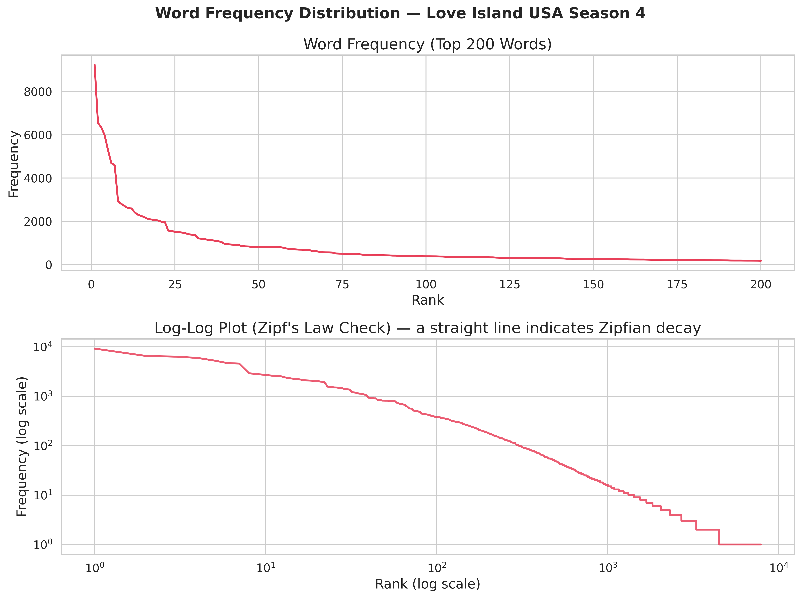
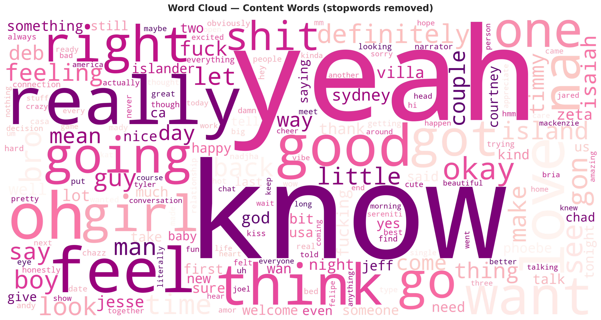
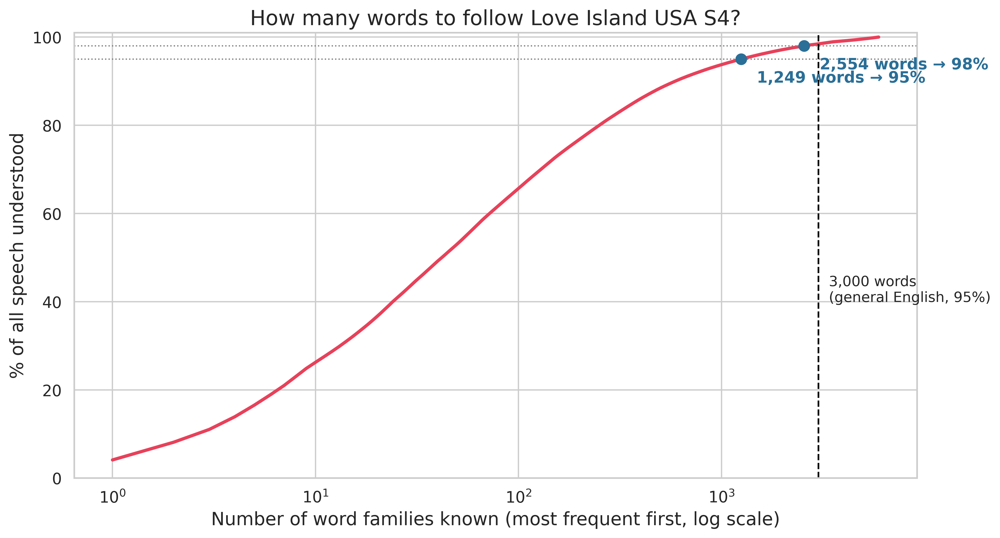
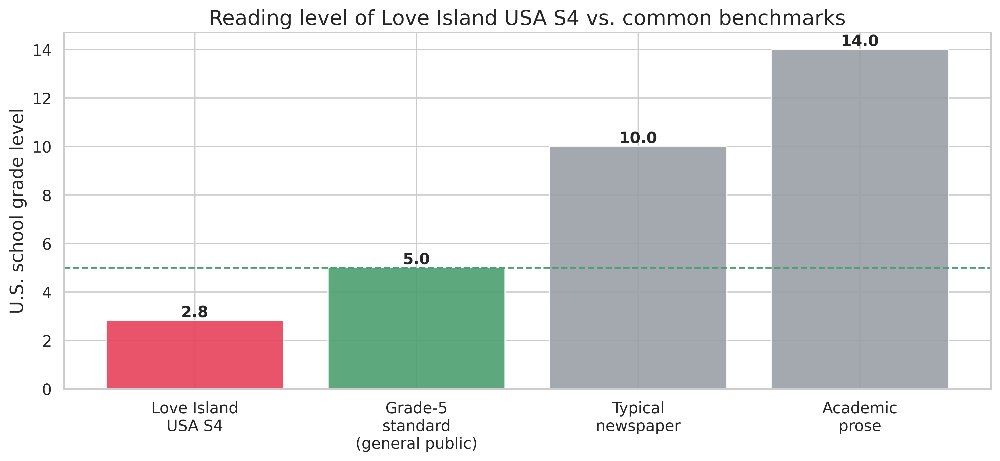

Data Story · Natural-Language Analysis
Reality TV is famous for sounding repetitive. I turned a whole season of Love Island USA into data to find out exactly how simple the talking really is.
We all feel like reality dating shows use a tiny, looping vocabulary — the same handful of words ("like", "literally", "connection", "vibe") over and over. But "it feels repetitive" isn't a measurement. So I took every episode of Love Island USA Season 4, collected the spoken transcripts, and measured the language the way a linguist would: how varied is it, how hard is it to read, and how many words you'd actually need to know to understand it.
I gathered the transcripts for the whole season into one big text "corpus" — one file per episode. Then a set of Python scripts counted and analysed the words: which words appear most, how often rare words show up, the share of filler words, the emotional tone, and the reading grade level. No special background needed to read the results below — each chart answers one simple question.
If you rank every word by how often it's spoken, the top 100 words alone make up 61% of all the talking. The pattern follows an almost textbook "Zipf" curve (a few words used constantly, a long tail used rarely) — so cleanly that the trend line fits 98% of the data.


Knowing roughly the 1,250 most common word families is enough to understand 95% of everything said — and about 2,550 covers 98%. For comparison, everyday written English usually needs around 3,000. In other words, the show is built out of words almost everyone already knows.

Run the dialogue through standard readability formulas and it lands at about a 3rd-to-5th grade level. Nearly 98% of the words used are among the 3,000 most familiar words in English.

The tone stays consistently positive and highly subjective from start to finish, and the variety of language doesn't really change as the season goes on. It's emotional talk built from a small, familiar word set.
None of this is a knock on the show — simple, familiar language is exactly what makes it easy to watch with the sound half-on while you scroll your phone. What's fun is being able to put a real number on something everyone senses: yes, the talking is repetitive, and here's precisely how repetitive.